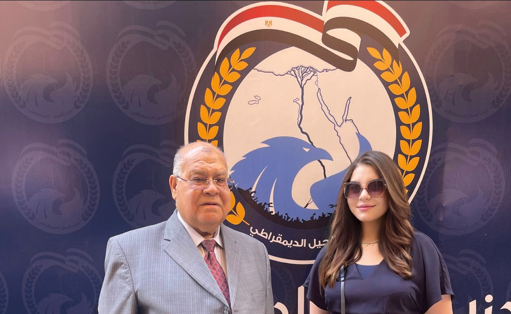

خبراء يدينون العدوان الإسرائيلي علي رفح.. تصعيد ضد مصر
- أكد عدد من الخبراء السياسيين إن محور فيلادلفيا منطقة منزوعة السلاح ولها أهمية استيراتيجية كبيرة، مشيرين إلي أن المحور على الأراضي الفلسطينية بين شبه جزيرة سيناء وقطاع غزة، على طول الحدود المصرية مع القطاع، ويمتد من البحر الأبيض المتوسط شمالا حتى معبر كرم أبو سالم جنوبا، حيث نقطة التقاء الحدود بين مصر وقطاع غزة ودولة الاحتلال، ويشكل شريطا عازلا بين مصر والقطاع، ويبلغ طوله نحو 14 كيلومترا، وعرضه بضع مئات من الأمتار، وقد أنشئ عليه معبر رفح البري، الذي يمثل المنفذ الرئيسي للغزيين على العالم الخارجي.
- الدبابات الاسرائيلية دخلت لأول مرة منذ 19 عاما محور فيلادلفيا "صلاح الدين" فى مخالفة واضحة،"يجب أن يكون منطقة عازلة" لما نصت عليه معاهدة السلام الموقعة بين مصر وإسرائيل برعاية أمريكية عام 1979 وعرفت إعلاميا باتفاقية كامب ديفيد نسبة إلى منتجع الرئيس الأمريكى كارتر الذى شهد المفاوضات بين الرئيس السادات ورئيس الحكومة الاسرائيلية مناحم بيجن ..أشار الشهابي أن محور فيلادلفيا يخضع لشروط ومعايير العبور من الأراضي الفلسطينية إلى مصر، فيما تنص المعاهدة على أن تنشر مصر عددا من قواتها في المنطقة لتأمينها وفقا لبروتوكول تم توقيعه مع إسرائيل مضيفا الشهابي أن القوات الإسرائيلية انسحبت منه ومن معبر رفح من الجانب الفلسطينى أيضا وذلك عندما غادرت عندما غادرت القوات الإسرائيلية قطاع غزة، فى عام 2005 ، ونقلت مهمة الإشراف عليهما إلى السلطة الفلسطينية، مع وجود مراقبين من الاتحاد الأوروبي، لكنها عادت إليه بعد استيلائها على معبر رفح بعد 19 عام وهو ما يعد هذا خرقا لاتفاقية السلام مع مصر الذى جعلته "محور فيلادلفيا" منطقة فلسطينية عازلة بين مصر وقطاع غزة،
- أكد رئيس حزب الجيل مصر تمتلك جيش قادر أن يحمى امنها القومى وتأمين حدودها مع إسرائيل وفلسطين، ولا يمكن للقوات الإسرائيلية الاقتراب منها منها، لأنها خط أحمر كما أكد الرئيس السيسى أكثر من مرة بعد السابع من أكتوبر موضحا أن محور فيلادلفي يبلغ طوله 14 كيلومتراً، وتسمح اتفاقية السلام، بنشر قوات محدودة ومحددة في ذلك المحور بالتنسيق بين البلدين، بهدف القيام بدوريات لمنع التهريب والتسلل والأنشطة الإجرامية، لافتاً إلى أن المنطقة "د" تمتد بعمق 2.5 كيلومتر من الحدود الإسرائيلية مع مصر، وتشمل كذلك الشريط الحدودي داخل قطاع غزة مع مصر ...مشيرا إلى أن المحور يقع ضمن المنطقة "د" بموجب الملحق الأول للاتفاقية التي تسمح بتواجد قوة عسكرية إسرائيلية محدودة ومراقبين من الأمم المتحدة، على ألا تتضمن القوة أي تواجد للدبابات أو المدفعيات أو الصواريخ، ووفق اتفاقية السلام أيضاً، فإنه يجب أن يتعهد الطرفان وهما مصر وإسرائيل، بالامتناع عن التهديد باستخدام القوة أو استخدام أحدهما لها ضد الآخر على نحو مباشر أو غير مباشر، وبحل كافة المنازعات التي تنشأ بينهما بالوسائل السلمية.لافتا «الشهابي» أن اتفاقية السلام تضمنت بنداً يتعهد فيه كل طرف "وهما مصر واسرائيل" بالامتناع عن التنظيم، أو التحريض، أو الإثارة، أو المساعدة، أو الاشتراك في فعل من أفعال الحرب العدوانية، أو النشاط الهدام، أو أفعال العنف الموجهة ضد الطرف الآخر في أي مكان ، كما يتعهد كل طرف بأن يكفل تقديم مرتكبي مثل هذه الأفعال للمحاكم، مؤكدا رفض مصر أي محاولات إسرائيلية لانتهاك الاتفاق الموقع بين البلدين ..وقد اكد الرئيس الأمريكى بايدن مؤخرا رفض مصر مخالفة إسرائيل لاتفاقية السلام واستيلائها على معبر رفح
- و في هذا الإطار أوضح الدكتور عبد المهدي مطاوع، المحلل السياسي الفلسطيني، أنه من وجهة النظر الإسرائيلية فإن المنطقة ذات أهمية استراتيجية، حيث يرى الإسرائيليون أنها مكان يمكن من خلاله إدارة أنشطة التهريب والسيطرة على ميناء رفح، وإن تجاوز الحاجز يعني التحكم أو تحديد من يدخل ومن يخرج.
- و أضاف «مطاوع» قائلا إن مصر ودول العالم وكافة المؤسسات الدولية ترى أن تصاعد الأوضاع في المنطقة يهدد حياة أكثر من مليون من السكان والنازحين في المدينة، والسبب أنه لم يعد هناك حل لتلك الأزمة الحقيقة أن هذا يختلف تمامًا عن الأماكن الأخرى لا توجد مياه ولا صرف صحي، وهي مشكلة كبيرة تهدد حياة المواطنين»
- ويرى المحلل السياسي أن موضوع دول المحور والمناطق الحدودية هو أمر مرتب في البروتوكولات الملحقة باتفاقية كامب ديفيد ويتم التعامل معه من خلالها، مما يعني أن مصر لديها القدرة والحكمة والإصرار على اتخاذ الإجراءات، بما يضمن أمنهم الوطني وبما يخفف العبء عن الشعب الفلسطيني في غزة.
- وأوضحت الدكتورة هبة البشبيشي، خبيرة الشئون الإفريقية، ان العدوان الإسرائيلي يعتبر تصعيدًا ضد مصر، والحقيقة أن أمام مصر طريقين يجب أن تسلكهما، تقديم شكوى ضد إسرائيل وانتهاكاتها إلى الأمم المتحدة. ديفيد، هذا يخالف الاتفاق الذي يمنع القوات من دخول المنطقة. وهذه منطقة منزوعة السلاح تحميها قوات الشرطة وتعمل إسرائيل على التدخل. احتمال مهاجمة الطائرات لمدينة رفح، والفصل بين فلسطين ورفح المصرية، يعني مشاريع حدودية في الفكرة التي نناقشها. وطبعاً إسرائيل خرقت اتفاقات كامب ديفيد، حتى لو قدمت تطمينات للجانب المصري وقالت إنها في الظل وفي إطار مكافحة الإرهاب، وأين نحن، أين الإرهاب؟ أين الإرهاب الذي تحاربه إسرائيل، ما يحدث في غزة، غزة بعيدة جدا عن الحدود المصرية، ما يحدث هو قضية جيب غزة والمناطق المحيطة بها وهجماتهم على الإسرائيليين وإسرائيل والتفجيرات القاتلة و القاتل واستمر القصف لمدة ستة أشهر.
- وأشارت إلي أن في قطاع غزة بتموت الناس ويتم هدم البيوت على الموجودين، ثم هربت رفح لمنطقة آمنة من الطيران الاسرائيلي، وتم الاعتداء ودخول الطيران الإسرائيلي واجتياح رفح البري التي تهدد به إسرائيل ٤ شهور، الحقيقة ان هذا ليس هو الحل ،ليس حل للأزمة التي بين الفلسطينيين والإسرائيليين، وصعب وصول الفلسطينيين ليسلموا الأسرى اليهود أو الأسرى الإسرائيليين الذي اخذوهم أثناء 7 أكتوبر، الحقيقة الموضوع محتاج مفاوضات ومحتاج عقليات تدير الأزمة بشكل إنساني وبشكل سياسي أكتر من شكل عدواني وقاتل.
- وعبرت عن الاعمال التي تقوم بها اسرائيل انها حكومة أثبتت فشل وفساد وعدم القدرة على تحقيق أي أهداف، من الذي أعلن في العملية العسكرية اللي بدءتها يوم 8 أكتوبر، وكانت الحادثة حصلت 6 أكتوبر، وتم في 8 أكتوبر قصف على قطاع غزة، فبالتالي أعتقد إن إسرائيل أعلنته، هي دولة فاسدة ودولة فاشلة ونظامها نظام لم يكن لديه القوى الشاملة للدولة .
التعليقات
يارب فك اسر فلسطين
اكتب تعليق